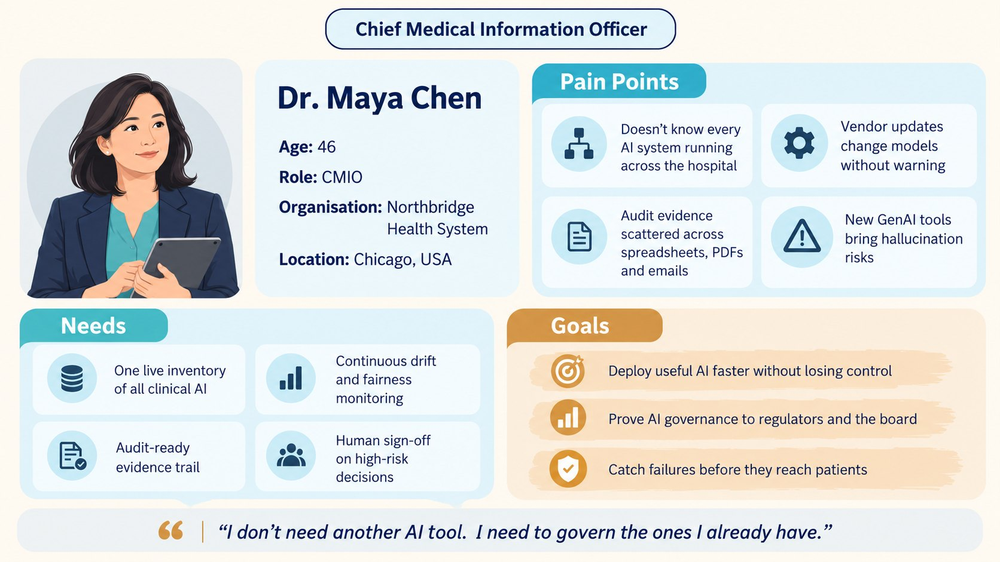
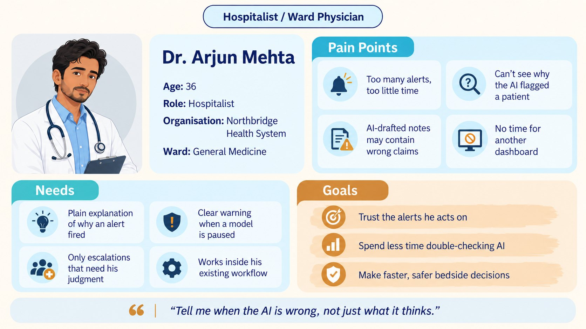
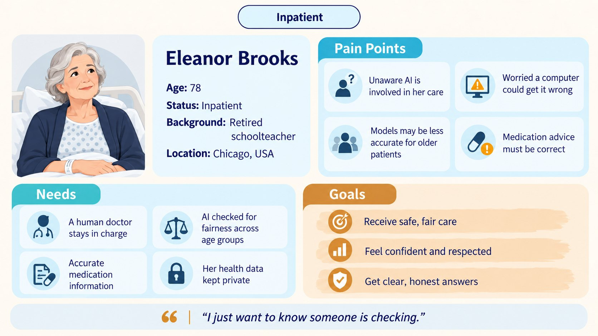

Company Overview & Agentic AI
Agents gather the evidence. Humans make the calls.
Mission: make every clinical AI explainable, checked and accountable before it reaches patients.
Vision: the trust layer for every hospital's AI.
Market: B2B clinical-AI governance for US hospitals. 71% of US hospitals run predictive AI in the EHR, and 74% split AI oversight across several teams.
Problem: governance runs on spreadsheets, committees and vendor PDFs. It is manual, slow and inconsistent.
Role of AI: agents discover, monitor, test and document every model. ClinWarden never diagnoses patients.
- 1 Discover
- 2 Map · gate
- 3 Baseline · gate
- 4 Monitor
- 5 Investigate
- 6 Control · gate
- 7 Document
- 8 Learn · gate
At each gate, a named human approves the risk tier, signs off the baseline, ratifies a pause, or updates policy.
Value: less manual evidence work, faster safe approvals, failures caught early. ROI = (annual benefit − cost) ÷ cost.
Moat, Defensibility & Porter's Five Forces
Easy to start. Hard to replace.
Product: one governance layer, two assurance lanes
- Predictive lane: drift, subgroup fairness, SHAP/LIME.
- Generative lane: claim-by-claim checks and quarantine.
- Trust Passport: a living evidence record per model, linked in the Governance Evidence Graph. Explanation ≠ validation: SHAP shows why, not whether it's right.
Competitive moat
- Deep integrations with the EHR, model endpoints and GenAI apps.
- Passport history: leaving means losing evidence.
- Evidence Graph links models, tests, alerts and decisions.
- No patient-data moat, since HIPAA and BAA rules limit it.
Porter's Five Forces
| Force | Level | Implication |
|---|---|---|
| Buyer power | High | Must prove workflow value |
| Supplier power | Med–High | Stay vendor-neutral |
| Rivalry | High | Rivals each solve one piece |
| Substitutes | High | Spreadsheets and committees |
| New entrants | Moderate | Dashboards copy; trust doesn't |
Strategic point: we win by becoming the system of record for clinical-AI governance evidence.
Persona & Customer Journey
Maya has to answer for every model in her hospital.

Target buyer. Decides on integration, evidence quality, configurable human oversight and security.

User. Acts on ClinWarden's alerts at the bedside.

Affected. The patient whose care the governed models touch.
Maya's journey
- 1 · Onboard: map the AI estate, build baselines
- 2 · Pilot: 3 systems get Trust Passports
- 3 · Automate: agents monitor around the clock
- 4 · Value proven: an incident is caught and reviewed
- 5 · Renew: expand to more models
Governance, Guardrails & US Compliance
Catch it. Pause it. Prove what happened.
Example: Patient Deterioration Model v4.7 (illustrative)
- 1 · Detect: drift PSI 0.31 (limit 0.20); age 75+ accuracy below minimum.
- 2 · Pause: model paused; clinicians switch to the standard protocol.
- 3 · Humans decide: restart needs the Model Owner and a Clinical Safety Reviewer.
- 4 · Prove: Incident Replay records who saw what, and who acted.
ClinWarden never overrides a clinician, and its records are evidence, not a legal verdict.
Oversight scales with risk
Low: log and review · Moderate: sampling and anomaly alerts · High: continuous monitoring · Critical: human authorisation required
Always stops or escalates on
Drift, subgroup drop, unauthorised change, contradicted GenAI claim, missing evidence, privacy event.
Hallucination safeguard
Contradicted GenAI claims are quarantined for pharmacist review. "Supported" is not a guarantee.
US compliance: evidence mapped to
NIST AI RMF (voluntary; our workflow follows it) · HIPAA (minimum PHI access, under a BAA) · CCPA/CPRA (applicability check) · FTC (substantiated AI claims) · FCRA (flagged only if it applies)
Appendix: Thinking & AI Use
AI tools used
Claude: helped to create the video and compiling information into slides.
ChatGPT: helped with research and created the persona images.
Hardest call: how autonomous should ClinWarden be?
- Fully autonomous: fast, but one AI judges another unchecked.
- Approve every step: safe, but it rebuilds the manual bottleneck.
- Chosen, bounded automation: agents monitor and quarantine; named humans own high-risk calls and restarts.
Accepted / Modified / Rejected
Accepted: living Trust Passports over one-time certification.
Modified: agentic AI, with human gates on high-risk actions.
Rejected: SHAP as proof of trust, hence "Explanation ≠ validation".
References
- ONC. (2025). Hospital trends in the use, evaluation, and governance of predictive AI, 2023–2024 (Data Brief No. 80).
- NIST. (2023). AI Risk Management Framework (AI RMF 1.0), NIST AI 100-1.
- Lundberg, S. M., & Lee, S.-I. (2017). A unified approach to interpreting model predictions. NeurIPS 30.
- Ribeiro, M. T., Singh, S., & Guestrin, C. (2016). "Why should I trust you?" KDD '16.
- Obermeyer, Z., et al. (2019). Dissecting racial bias in an algorithm used to manage the health of populations. Science, 366(6464).